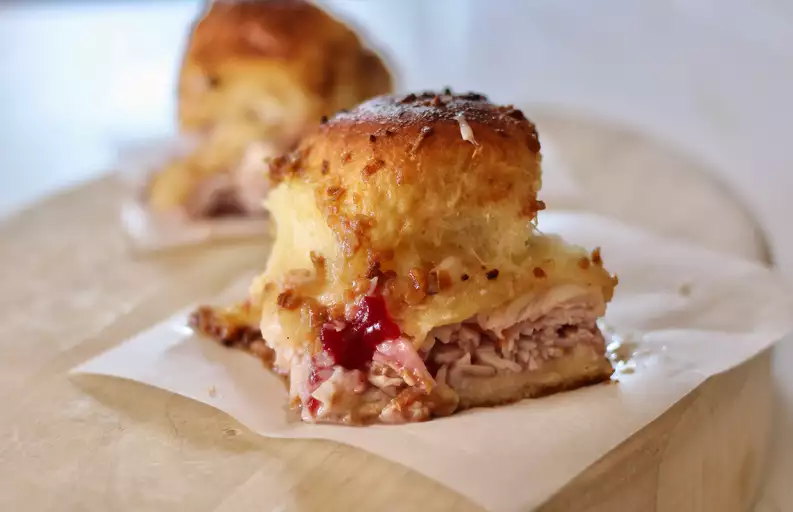

Baked Turkey and Cranberry Slices

These are a take on the popular baked ham and Swiss sliders with a holiday twist. They also taste great with leftover roasted turkey and French fried onions.
Ingredients
cooking spray
1/2 stick butter, melted
1 1/2 tablespoons Dijon mustard, or more to taste
1 tablespoon dried minced onion
1 1/2 teaspoons Worchestershire sauce
1 (12 count) package Hawaiian bread rolls, split
1 tablespoon mayonnaise, or to taste
1/2 (14 ounces) can jellied cranberry sauce
1/2 pound cooked honey-roasted turkey, shaved
6 slices Havarti cheese, cut into halves
1 cup arugula (Optional)
Steps
- Preheat the oven to 350 degrees F (175 degrees C). Spray a 9x13-inch pan with cooking spray.
- Whisk melted butter with Dijon mustard, dried onion, and Worcestershire in a small bowl.
- Place the bottom halves of the rolls into the prepared pan. Spread mayonnaise and additional Dijon mustard to taste along the rolls. Spread cranberry sauce. Add turkey and 1/2 slice of cheese to each. Top with arugula and top halves of the rolls. Spread melted butter mixture evenly over tops. Cover the pan tightly with aluminum foil.
- Bake in the preheated oven for 15 minutes. Remove from the oven, uncover, and continue to bake until cheese is melted, 10 to 15 minutes.